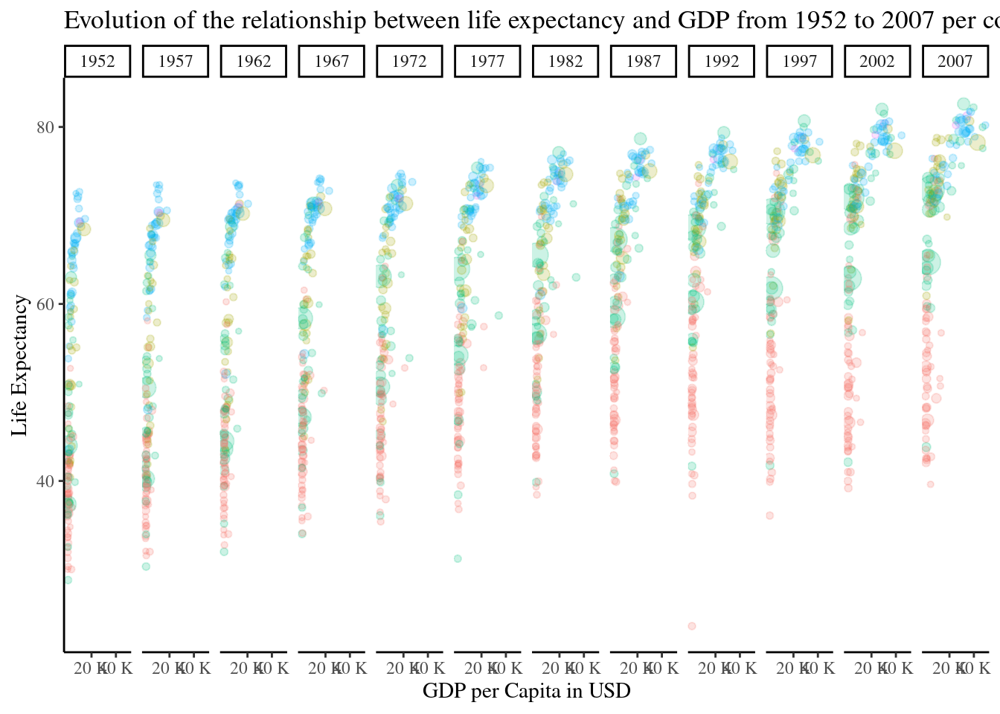

Unraveling the Dynamics
Exploring the Interplay between Population Growth, Life Expectancy, and GDP Fluctuations since 1952
This report embarks on a journey to decipher the complex relationships between demographic changes, health outcomes, and economic fluctuations over the past seven decades. Through rigorous analysis of Gapminder data, this study seeks to answer the central research question: How have population growth, life expectancy, and GDP fluctuations intersected and influenced each other since 1952?
By delving into this inquiry, the report aims to shed light on the underlying mechanisms driving societal development, thereby providing valuable insights for policymakers, researchers, and stakeholders navigating the challenges of contemporary global dynamics.
Snapshoot of the World in 1952
Intriguingly, this snapshot reveals stark divergences in life expectancy between developed and developing nations, with industrialized regions typically boasting higher life expectancies compared to their counterparts in the Global South. Countries in Europe and North America, buoyed by advancements in healthcare, sanitation, and nutrition, often exhibited longer life spans, underscoring the influence of socio-economic development on health outcomes.
Significant Evolution
Analyzing the data reveals notable turning points and trends. Initial years may showcase modest gains, reflective of early advancements in healthcare and sanitation. However, as the decades progress, accelerated improvements become evident, driven by breakthroughs:
- in medical science,
- improved access to healthcare,
- and socioeconomic development.

Conclusions and Recommendations
Crucially, the chart illuminates the impact of major public health initiatives and interventions. Events such as the global eradication of smallpox, advancements in vaccination programs, and the implementation of policies targeting maternal and child health contribute to pronounced spikes in life expectancy during specific periods.